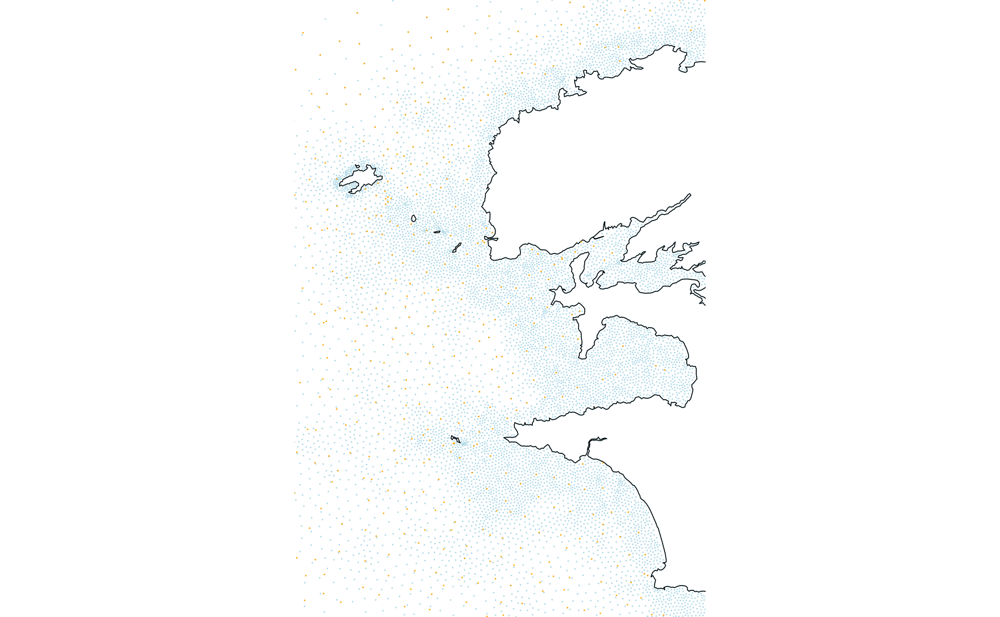
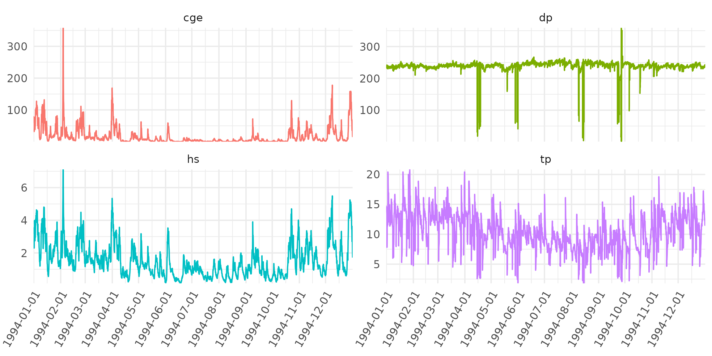
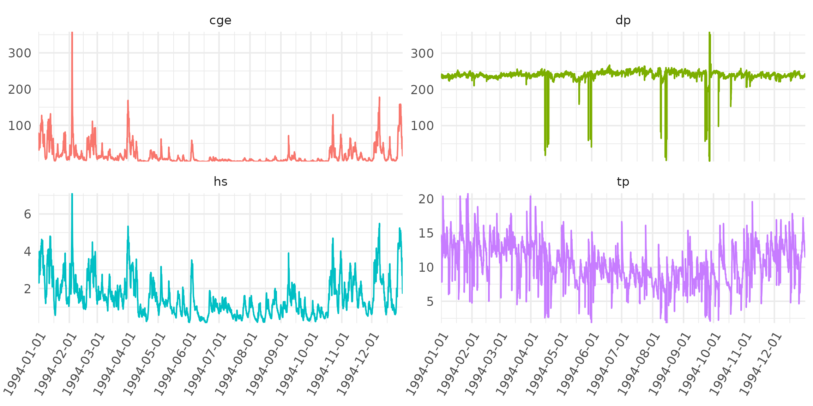
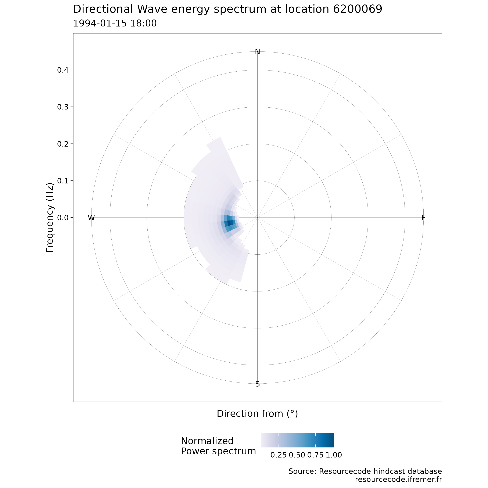

The goal of resourcecode is to provide an easy access to the ResourceCODE hindcast database of sea-states. More information on the database can be found here. We will explain in this vignette the way to retrieve data from this database and some the functionalities offered by this package.
This package depends on data in a data package
resourcecodedata that is available through a
drat repository on GitHub. To use the
resourcecode package, you will need to install
resourcecodedata on your computer, using the following
install.packages function (and later update it using the
update.packages function):
install.packages("resourcecodedata",
repos = "https://resourcecode-project.github.io/drat/",
type = "source"
)Once the packages are installed, we can proceed as usual:
Database configuration: nodes, bathymetry…
There are two grids in the ResourceCODE hindcast database: the full, dense, FIELD grid, which is the grid where the numerical WWIII model is run and where sea-state parameters and only 1D spectra are available. The second grid, SPEC, is coarser, but contains the full 2D spectral data at each node.
- FIELD grid
The variable rscd_field contains the coordinates of the
FIELD grid, along with the depth of these points and d50,
the bottom sediment type.
str(rscd_field)
#> 'data.frame': 328030 obs. of 5 variables:
#> $ node : int 1 2 3 4 5 6 7 8 9 10 ...
#> $ longitude: num 6.92 6.91 6.92 6.93 6.95 ...
#> $ latitude : num 62.9 62.9 62.9 62.9 62.9 ...
#> $ depth : num 3 3 3 3 3 3 3 3 3 3 ...
#> $ d50 : num 0 1.32 1.32 1.32 1.32 ...
head(rscd_field)
#> node longitude latitude depth d50
#> 1 1 6.922498 62.91467 3 0.000
#> 2 2 6.910178 62.91301 3 1.322
#> 3 3 6.920552 62.90438 3 1.322
#> 4 4 6.933673 62.89938 3 1.322
#> 5 5 6.945979 62.90012 3 1.322
#> 6 6 6.958059 62.89899 3 1.322At each location, a large number of sea-state parameters are
available, described in rscd_variables:
str(rscd_variables)
#> 'data.frame': 88 obs. of 3 variables:
#> $ name : chr "longitude" "latitude" "tri" "MAPSTA" ...
#> $ longname: chr "longitude" "latitude" "tri" "status map" ...
#> $ unit : chr "degree_east" "degree_north" "" "1" ...
head(rscd_variables)
#> name longname unit
#> 1 longitude longitude degree_east
#> 2 latitude latitude degree_north
#> 3 tri tri
#> 4 MAPSTA status map 1
#> 5 dpt depth m
#> 6 ucur eastward current m s-1The available location can be plotted on a map using the following
code. It can be noticed here that the variables
rscd_coastline and rscd_islands contain the
path of the coast line and the islands, respectively.
lim_lon <- c(-5.25, -4.25)
lim_lat <- c(47.75, 48.75)
field_bzh <- ggplot(rscd_field, aes(x = longitude, y = latitude)) +
geom_point(size = .1, col = "lightblue") +
geom_path(data = rscd_coastline, linewidth = .2) +
geom_path(data = rscd_islands, aes(group = .data$ID), linewidth = .2) +
coord_sf(xlim = lim_lon, ylim = lim_lat, expand = FALSE, crs = sf::st_crs(4326)) +
theme_void()
field_bzh
- SPEC grid
The spectral grid, or SPEC grid is coarser, with more than 24,000 nodes where the full 2D spectra are available. The grid can be added to the previous plot to see the differences in the spatial coverage.
str(rscd_spectral)
#> 'data.frame': 24276 obs. of 5 variables:
#> $ longitude: num 1.5 -5.5 -6 -6.5 -7 4.5 4 3.5 3 2.5 ...
#> $ latitude : num 52 52 52 52 52 52.5 52.5 52.5 52.5 52.5 ...
#> $ name : chr "E001500N52000" "W005500N52000" "W006000N52000" "W006500N52000" ...
#> $ depth : num 15.4 89.6 95.8 52.7 54.7 ...
#> $ d50 : num 0.737 -0.8265 -1.585 0.737 0.0346 ...
head(rscd_spectral)
#> longitude latitude name depth d50
#> 1 1.5 52.0 E001500N52000 15.41327 0.73700004
#> 2 -5.5 52.0 W005500N52000 89.64895 -0.82650555
#> 3 -6.0 52.0 W006000N52000 95.83614 -1.58500008
#> 4 -6.5 52.0 W006500N52000 52.67409 0.73700004
#> 5 -7.0 52.0 W007000N52000 54.67464 0.03464983
#> 6 4.5 52.5 E004500N52500 14.18527 0.73700004
field_bzh + geom_point(data = rscd_spectral, col = "orange", size = .1)
- Helpers to find points
When one is interested in some location, we also provide helpers to
find the closest point in each of the grid, via the
closest_point_FIELD() and closest_point_SPEC()
functions.
Getting data
We have two different sources of data, the FIELD grid, and the SPEC grid. We will cover each use case here.
- Sea-state parameters from the FIELD can be retrieved using the
get_parameters()function, which allows to download a time series easily at a given location. For the moment (Sept. 2023), the 1D spectra on this grid are not available to direct download.
For example, if one is interested in the time series of sea-state parameters at some location, the following code can be adapted:
point_of_interest <- c(longitude = -4.6861533, latitude = 48.3026514)
node <- closest_point_field(point_of_interest)
node
#> $points
#> [,1]
#> [1,] 134940
#>
#> $distances
#> [,1]
#> [1,] 288.974
ts <- get_parameters(node = node$point, parameters = c("hs", "tp", "dp", "cge"))
ggplot(tidyr::pivot_longer(ts, -1), aes(x = time, y = value, col = name)) +
geom_line() +
coord_cartesian(expand = FALSE) +
facet_wrap(~name, ncol = 2, scales = "free_y") +
scale_x_datetime(name = NULL, date_breaks = "month") +
scale_y_continuous(name = NULL) +
theme_minimal() +
theme(
legend.position = "none",
axis.text.x = element_text(angle = 60, hjust = 1)
)
- 1D and 2D spectra of the SPEC grid can be downloaded directly from
IFREMER FTP using functions
get_1Dspectrum()andget_2Dspectrum(). We also provide a plotting function for the 2D spectrum.
node_spectral_grid <- closest_point_spec(point_of_interest)Then one can extract the 1D spectrum time-series and see the contents of these downloaded data.
spec_1d <- get_1d_spectrum(node_spectral_grid$point, start = "1994-01-01", end = "1994-02-28")
str(spec_1d)
#> List of 12
#> $ longitude : num -4.68
#> $ latitude : num 48.3
#> $ frequency1: num [1:36(1d)] 0.0339 0.0356 0.0392 0.0431 0.0474 ...
#> $ frequency2: num [1:36(1d)] 0.0356 0.0392 0.0431 0.0474 0.0521 ...
#> $ ef : num [1:36, 1:1416] 0.000526 0.0028 0.009767 0.145907 1.126401 ...
#> ..- attr(*, "dimnames")=List of 2
#> .. ..$ : NULL
#> .. ..$ : NULL
#> $ th1m : num [1:36, 1:1416] 202 203 205 226 230 ...
#> ..- attr(*, "dimnames")=List of 2
#> .. ..$ : NULL
#> .. ..$ : NULL
#> $ th2m : num [1:36, 1:1416] 202 203 205 180 180 ...
#> ..- attr(*, "dimnames")=List of 2
#> .. ..$ : NULL
#> .. ..$ : NULL
#> $ sth1m : num [1:36, 1:1416] 13.5 13.9 14.5 16.6 14.7 ...
#> ..- attr(*, "dimnames")=List of 2
#> .. ..$ : NULL
#> .. ..$ : NULL
#> $ sth2m : num [1:36, 1:1416] 26.1 26.8 28 32.2 28.7 ...
#> ..- attr(*, "dimnames")=List of 2
#> .. ..$ : NULL
#> .. ..$ : NULL
#> $ freq : num [1:36(1d)] 0.0339 0.0373 0.041 0.0451 0.0496 ...
#> $ forcings : tibble [1,416 × 14] (S3: tbl_df/tbl/data.frame)
#> ..$ time : POSIXct[1:1416], format: "1994-01-01 00:00:00" "1994-01-01 01:00:00" ...
#> ..$ dpt : num [1:1416] 27 27.5 29 30.5 31.5 32.5 32.5 32 31 29.5 ...
#> ..$ wnd : num [1:1416] 12.2 11.6 10.8 10.9 10.8 ...
#> ..$ wnddir: num [1:1416] 301 299 298 295 294 ...
#> ..$ cur : num [1:1416] 0.1 0.2 0.3 0.4 0.3 ...
#> ..$ curdir: num [1:1416] 325 27.5 41.2 48.6 55.9 ...
#> ..$ hs : num [1:1416] 3.02 3.11 3.23 3.35 3.43 ...
#> ..$ fp : num [1:1416] 0.0672 0.067 0.0671 0.0672 0.0727 ...
#> ..$ f02 : num [1:1416] 0.132 0.129 0.124 0.121 0.12 ...
#> ..$ f0m1 : num [1:1416] 0.0905 0.0882 0.0864 0.0858 0.0862 ...
#> ..$ th1p : num [1:1416] 234 234 235 237 238 ...
#> ..$ sth1p : num [1:1416] 13.4 13.3 13.1 12.9 12.7 ...
#> ..$ dir : num [1:1416] 239 239 239 240 241 ...
#> ..$ spr : num [1:1416] 19.6 19.5 18.8 18 17.4 ...
#> $ station : chr "W004679N48304"The same applies to 2D spectra.
spec_2d <- get_2d_spectrum(node_spectral_grid$point, start = "1994-01-01", end = "1994-02-28")
str(spec_2d)
#> List of 9
#> $ longitude : num -4.68
#> $ latitude : num 48.3
#> $ frequency1: num [1:36(1d)] 0.0339 0.0356 0.0392 0.0431 0.0474 ...
#> $ frequency2: num [1:36(1d)] 0.0356 0.0392 0.0431 0.0474 0.0521 ...
#> $ efth : num [1:36, 1:36, 1:1416] 0.00024 0.000629 0.000872 0.000705 0.000423 ...
#> ..- attr(*, "dimnames")=List of 3
#> .. ..$ : NULL
#> .. ..$ : NULL
#> .. ..$ : NULL
#> $ freq : num [1:36(1d)] 0.0339 0.0373 0.041 0.0451 0.0496 ...
#> $ dir : num [1:36(1d)] 0 10 20 30 40 50 60 70 80 90 ...
#> $ forcings : tibble [1,416 × 6] (S3: tbl_df/tbl/data.frame)
#> ..$ time : POSIXct[1:1416], format: "1994-01-01 00:00:00" "1994-01-01 01:00:00" ...
#> ..$ dpt : num [1:1416] 27 27.5 29 30.5 31.5 32.5 32.5 32 31 29.5 ...
#> ..$ wnd : num [1:1416] 12.2 11.6 10.8 10.9 10.8 ...
#> ..$ wnddir: num [1:1416] 301 299 298 295 294 ...
#> ..$ cur : num [1:1416] 0.1 0.2 0.3 0.4 0.3 ...
#> ..$ curdir: num [1:1416] 145 208 221 229 236 ...
#> $ station : chr "W004679N48304"In addition, it is possible to plot the wave elevation directional spectra for any given time, which can be specified by the time index or directly the date:
plot_2d_specta(spec_2d, "1994-01-15 18:00")